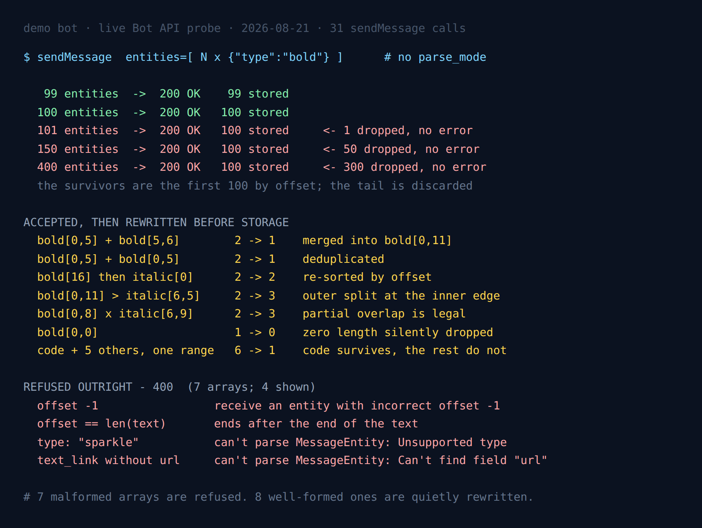

Telegram Keeps 100 Message Entities and Drops the Rest
Every Telegram bot library eventually stops using parse_mode and starts building the entities array by hand. It happens the first time you have to format text that contains something a user typed, because escaping user input into MarkdownV2 is a losing game and the entities array skips the parser entirely.
The Bot API documents the MessageEntity object exhaustively — every type, every optional field. What it does not document is the array. How many will it take? What does it do with two entities that overlap? With one that repeats? With one that sits outside the text?
I sent 31 sendMessage calls to find out, and read the entities back off every message the API accepted rather than trusting the status code. The headline number is the one nobody warns you about:
- The ceiling is 100 entities, and it is enforced silently. Send 150 and you get
200 OK, a normalMessageobject, and 100 stored entities. Nothing in the response says the other 50 are gone. - Seven distinct rewrites happen to well-formed arrays before storage. Merged, deduplicated, re-sorted, split, truncated. What you read back is frequently not what you sent.
- Only structurally impossible arrays are refused — a negative offset, an entity running past the end of the text, a type that does not exist.

Why the status code is the wrong thing to check
This measurement only exists because of a design choice in the probe: after every accepted call it reads result.entities off the message the API hands back and diffs it against the array that went out.
That felt like over-engineering when I wrote it. It turned out to be the entire finding. Eleven of the eighteen arrays I sent were accepted, and only three of those eleven came back unchanged. An "accepted" entity array and a "stored as sent" entity array are two different outcomes, and the status code cannot tell them apart.
If you take one habit away from this: after a formatted send, compare len(response.entities) to the length of what you sent. It is two lines, and it is the only signal you get.
The ceiling: 100, then a cliff
I built messages of n single-character words with one bold entity per word, walked n up, and counted what came back.
| Entities sent | HTTP status | Entities stored |
|---|---|---|
| 99 | 200 OK | 99 |
| 100 | 200 OK | 100 |
| 101 | 200 OK | 100 |
| 150 | 200 OK | 100 |
| 400 | 200 OK | 100 |
One hundred exactly, and 101 is the first array that loses data. There is no 400, no warning field, no truncation flag. The survivors are the first hundred by offset — at 150 entities the last stored one sat at offset 198, which is word 100 of 150. The tail of your message simply arrives unformatted.
The limit is on the array, not on any one type. A message carrying 60 bold entities and 60 italic entities on distinct ranges — 120 in total, no type exceeding 100 on its own — also came back with 100 stored, containing both types. So you cannot buy headroom by spreading formatting across different types.
Where this bites in practice: anything that formats a list. A leaderboard that bolds every player name, a log dump that wraps each timestamp in code, a digest that links every headline. One entity per row means the hundred-and-first row loses its formatting, and it does so on exactly the messages that are long enough for nobody to read them closely in testing.
The seven quiet rewrites
Now the accepted-but-changed cases — eight arrays, seven distinct behaviours. Each returned 200 OK and a stored array that differed from the one sent.
Adjacent entities of the same type are merged
Sending bold[0,5] and bold[5,6] — two entities that touch — stores a single bold[0,11]. Harmless for rendering, and worth knowing if you round-trip entities through your own code and expect the boundaries to survive.
Identical entities are deduplicated
Two copies of bold[0,5] store as one. Also harmless, and the reason a naive "apply formatting rules in a loop" implementation never notices it is emitting duplicates.
The array is re-sorted by offset
Sending bold at offset 16 followed by italic at offset 0 stores them in the opposite order: italic first. The Bot API does not require you to sort the array, and it will not preserve your order either. Anything comparing entity arrays for equality needs to sort first.
Nested entities are split at the inner boundary
This is the one that surprised me. Sending an outer bold[0,11] with an inner italic[6,5] — two entities — stores three:
sent: bold[0,11] italic[6,5]
stored: bold[0,6] bold[6,5] italic[6,5]The outer bold is cut in two at the point where the italic starts, and the fragments are stored alongside it. The rendering is identical; the array is not. If your code asserts that a formatted message round-trips to the same entity count, nesting alone will break that assertion.
Partial overlap is legal
Telegram's core API documentation on entities describes a nesting model, which reads like a prohibition on entities that cross each other's boundaries. The Bot API does not enforce one. bold[0,8] with italic[6,9] — overlapping in the middle, neither containing the other — was accepted, and stored as three fragments that carve the overlap out:
sent: bold[0,8] italic[6,9]
stored: bold[0,6] italic[6,9] bold[6,2]So the model really is nesting-only; the API just reaches that model by rewriting your array instead of refusing it.
Zero-length entities vanish
bold[0,0] is accepted and stored as nothing at all — one entity in, zero out. This is the failure mode of every "highlight the search term" feature ever written, because a zero-length match is what you get when the term is not found and nobody guarded the length.
code annihilates everything sharing its range
The most consequential of the seven. Six entities on one range — bold, italic, underline, strikethrough, spoiler and code — store as a single code entity. The other five are discarded. Sending just code plus bold on the same range gives the same result.
That is defensible, since monospace formatting is not composable with the rest. What is not obvious is that it happens without a word of complaint: a template that wraps a value in code and a highlighter that bolds a match inside it will silently disagree, and the highlighter always loses.
Telegram in Production
The measured limits, the failure modes and the boilerplate that survives them: escaping, rate limits, update queues and webhook handling, in one pack.
Get the pack — $19What it does refuse
Four categories, all of them structurally impossible rather than merely strange:
| Array sent | Error returned |
|---|---|
offset: -1 | receive an entity with incorrect offset -1 |
offset equal to text length | entity beginning at UTF-16 offset 21 ends after the end of the text at UTF-16 offset 22 |
length running past the end | same message, with the computed end offset |
type: "sparkle" | can't parse MessageEntity: Unsupported type specified |
text_link with no url | can't parse MessageEntity: Can't find field "url" |
custom_emoji with no id | can't parse MessageEntity: Can't find field "custom_emoji_id" |
Two details worth pulling out of that table. First, the out-of-range error quotes UTF-16 offsets explicitly, which is a useful confirmation that entity offsets really are counted in UTF-16 code units — unlike the 4096-character cap, which counts code points. In a message containing emoji or anything else outside the Basic Multilingual Plane, the two units disagree, and this is the one place the API tells you which it is using.
Second, a text_link pointing at javascript:alert(1) is rejected — with the delightfully wrong-sounding message "entity URL is invalid: Wrong port number specified in the URL". The URL is refused, which is what matters; the parser has simply read everything after the first colon as a port. Do not match on that string, because it describes a parser's confusion rather than the actual problem.
Entity errors arrive after the chat is resolved
A previous measurement on this bot found that MarkdownV2 parse errors are returned before Telegram resolves the chat, which makes a non-existent chat ID a free validator: send to chat_id=1, and a broken string still returns its real parse error while a valid one returns "chat not found".
I opened this probe by assuming the same trick would work for entities, and it does not. A deliberately broken array — an entity starting past the end of the text — sent to chat_id=1 returns "chat not found", not the entity error. Both layers are behind chat resolution.
That is a real operational difference between the two formatting paths, and it cost me a rewrite of the probe halfway through: every entity test has to be a real message in a real chat, sent and then deleted. It also means you cannot lint entity arrays against the live API in CI without a throwaway chat to send them to.
Five lines that would have caught all of this
Every finding above is invisible to code that checks response.ok and moves on. It is visible to code that does this:
r = bot.send_message(chat_id, text, entities=ents)
if len(r.entities or []) != len(ents):
log.warning("telegram normalised entities: sent %d, stored %d",
len(ents), len(r.entities or []))A mismatch is not automatically a bug — merging and deduplication are benign, and nesting will trip it every time. But a message that sent 140 and stored 100 is telling you that forty pieces of formatting never reached the user, and that is the only place it will ever be written down.
Every number, in one place
| Question | Measured answer |
|---|---|
| Maximum entities stored | 100, array-wide, not per type |
| Behaviour past the limit | 200 OK, first 100 by offset kept, rest dropped silently |
| Adjacent same-type entities | merged into one |
| Duplicate entities | deduplicated |
| Array order | re-sorted by offset |
| Nested entities | outer split at the inner boundary; count grows |
| Partially overlapping entities | accepted, rewritten into non-overlapping fragments |
| Zero-length entity | accepted, stored as nothing |
code sharing a range | survives; all other types on that range discarded |
| Offset units in error messages | UTF-16 code units |
| Validation vs chat resolution | after — unlike parse_mode errors |
The probe
Stdlib-only Python, takes a bot token and a chat ID. It runs the phase-0 chat-resolution check, walks the ceiling with a binary search, then sends each degenerate array and diffs the stored entities against the sent ones. Every message it sends to the real chat is deleted immediately after it is read back. Point it at a demo bot.
$ python3 tg-entities-probe.py --chat <your own chat id>
entity validation runs before chat resolution: False
ceiling: 100 stored (101, 150 and 400 all store 100)
accepted and kept as sent : 3
accepted and REWRITTEN : 8
refused with 400 : 7Three arrays out of eleven survive contact with the API unchanged. That ratio is the finding; the ceiling is just its most expensive instance.
FAQ
How many message entities can a Telegram message have?
One hundred. Measured live: 100 entities are stored in full, and 101 is the first array that loses data. The limit applies to the array as a whole, not per type — 60 bold plus 60 italic on distinct ranges also stored 100.
What happens if I send more than 100 entities?
The call succeeds. You get 200 OK and a normal Message, and everything past the hundredth is discarded without a warning. Sending 400 returned 200 OK with 100 stored. Comparing the returned entity count against what you sent is the only way to detect it.
Can Telegram message entities overlap?
Partial overlap is accepted rather than rejected. bold[0,8] with italic[6,9] — offset and length, so they cross in the middle — was stored as three non-overlapping fragments. Nesting behaves the same way: the outer entity is split at the inner one's boundary, so two entities in can be three entities out.
Does Telegram change the entities array I send?
Routinely. It merges adjacent same-type entities, deduplicates identical ones, re-sorts by offset, drops zero-length entities, splits nested ones into fragments, and discards every other formatting type sharing a range with a code entity.
Which entity arrays does the Bot API reject?
Structurally impossible ones: a negative offset, an entity ending past the end of the text, an unrecognised type, a text_link with no url, a custom_emoji with no custom_emoji_id, and a URL whose scheme it cannot parse. Anything merely odd is accepted and normalised.
Are entity offsets counted in UTF-16 or code points?
UTF-16 code units, and the API says so in its own error text: "entity beginning at UTF-16 offset 21 ends after the end of the text". Note that the 4096-character message cap is counted differently — in code points — so the two limits disagree on emoji.
Can I validate entities against a fake chat ID?
No. parse_mode errors are returned before chat resolution, but entity validation happens after it, so a broken array sent to a non-existent chat returns "chat not found". Every entity test costs a real message in a real chat.
More measurements from the same bot: which MarkdownV2 characters delete themselves, what the 4096-character limit actually counts, and where the Bot API validates an inline keyboard.
← Back to Blog